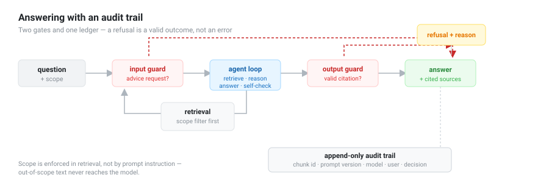
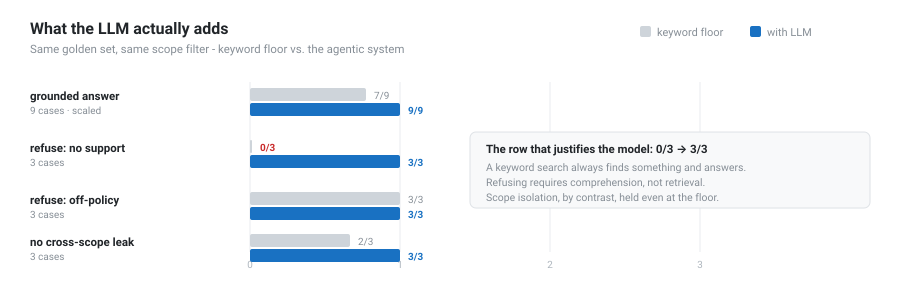

Auditable Agentic RAG
A retrieval-augmented agent built for regulated use: it refuses without evidence, never answers outside a user's scope, and writes every decision to an audit trail
Figures & Results


Project Overview
Most RAG demos answer well and stop there. In a bank, an insurer, or an asset manager, answering well is table stakes — the questions that decide whether a system can be deployed are different: did it refuse when it had no evidence? could it leak one client's data into another's answer? can you reconstruct, months later, why it said what it said?
This project is a production-style agentic RAG pipeline built around those three questions. It is the public, sanitised rewrite of a content-curation platform I designed and took to production, extended with the guarantees a regulated context demands.
The Central Design Decision
The model explains; it never computes and never decides. Any figure in an answer must appear literally in a retrieved passage, and every claim carries the passage that supports it. The practical consequence: swap the model and the numbers do not move — only the wording. A system where changing the model changes the figures is not auditable.
Scope follows the same principle. A user's permissions become a metadata filter applied during retrieval, not an instruction in the prompt. Out-of-scope text never reaches the model, so it cannot leak it. Restricting by prompt (“do not discuss X”) is a request, not access control.
Main Products / Deliverables
- Agentic RAG pipeline — tool-use loop (retrieve → reason → answer → self-check) with structured output and a hard budget of two LLM calls per question.
- Guardrails with four refusal decisions — off-policy request, no supporting evidence, no citation, fabricated citation. Off-policy is caught before any LLM call is spent.
- Append-only audit trail — one record per answer: passage IDs, prompt version, model, user, role, decision. It stores the hash of each passage, never the text, so the log never duplicates a confidential corpus.
- Two-layer evaluation harness — deterministic oracles first, LLM judge second and only on what was answered.
- Multi-agent PDF structurer — a deterministic probe that profiles each document, plus two agents (adaptive chunking and field extraction) in an eval-driven loop.
How It Is Evaluated
The harness runs deterministic checks before the judge, because the properties that matter most in a regulated setting are binary and verifiable without a model: did it refuse when it should? did it leak? Running an LLM judge over a refusal costs a call and adds nothing — the refusal was already verified exactly. Of 18 golden cases, 8 never reach the judge.
Against a keyword-matching floor using the same scope filter, the agentic system scored 18/18 with zero scope leaks:
- Refusal for lack of evidence: 0/3 → 3/3. This is the row that justifies the model. A search always finds something and answers — refusing requires comprehension, not retrieval.
- Scope isolation held even at the floor. Zero leaks with a naive responder, because the restriction happens during retrieval, before any LLM sees the text. That guarantee is structural, not model-dependent.
Judge metrics over the 10 answered items: faithfulness 1.000, answer relevancy 1.000, context precision 0.243. The last one is reported rather than hidden: top_k=5 retrieves five passages where most questions need one, so context precision measures retrieval noise and falls by construction on a small corpus. Cross-encoder reranking was implemented, A/B tested live, and left off because the deltas sat inside the noise.
An Error the Evaluation Caught — in the Evaluation Itself
The first live run flagged a scope leak. Investigating before accepting it: the question was “what was the 2019 return?”, and I had listed 2019 as a forbidden term. The system refused correctly and, while explaining that only 2025 data existed, echoed the year from the question. The defect was in my golden set, not the system. A forbidden term must describe data from another scope, never a word the user just typed. A regression test now blocks that class of error permanently.
Architecture
The domain layer knows no vendor. It defines entities, rules, and ports; adapters implement each port (Anthropic, Qdrant, a JSONL ledger); wiring lives in a single composition root. Changing LLM or vector database means writing an adapter — no domain file changes. That is what lets the entire business rule be tested with doubles, without network, without Qdrant, and without an API key.
The system prompt lives in a versioned file, outside the code, and its version is the hash of its content — recorded in every audit entry. Months later you can tell exactly which prompt text produced which answer, without anyone having to remember to bump a number.
Technologies Used
Getting Started
make qdrant # vector database on :6333
python scripts/seed_financeiro.py # index the synthetic corpus
uvicorn agentic_rag.api:app # serve /perguntar and /auditoria
python -m evals.harness --stub # full harness, no LLM and no key
python -m evals.harness # oracles + judge, real modelEvery document in the repository is synthetic. Two fictional asset managers exist for a reason: without two, there is nothing to leak, and scope isolation cannot be tested at all.
Repository
Architecture decision records, the eval harness, the governance notes, and the full test suite are in the repository.
View Project on GitHubResults & Impact
A retrieval system whose guarantees are testable rather than asserted: 18/18 on a behavioural golden set with zero scope leaks, 112 passing tests, and a governance document that states plainly what the system does not guarantee — no authentication layer, prompt injection through indexed content unmitigated, an append-only trail by convention rather than by storage. Listing the gaps is part of the deliverable; a governance section that only lists virtues is not one.